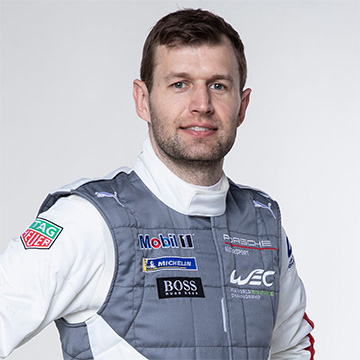
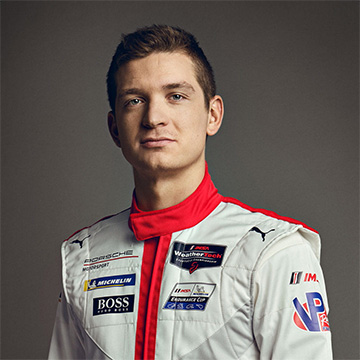
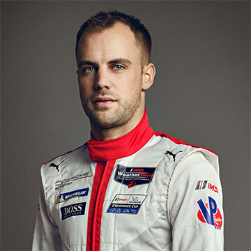

본문콘텐츠영역
ABOUT
Shaping the future of the sportscar – this is the theme of Strategy 2025. At the heart of the strategy is our future product portfolio. The sportscar of the future will blend the history and values of the Porsche brand with innovative technologies, while at the same time ensuring sustainability. In achieving this, topics such as electromobility, digitalisation and connectivity will play an important role. Embracing these topics will allow us to shape the exclusive and sporty mobility of tomorrow. Nevertheless, with all the innovations and modifications in front of us, one thing remains constant: Anything that carries the Porsche crest will also feature the excellent quality that is synonymous with Porsche.
With this approach we are already on our way towards rethinking sporty mobility. We want to excite customers with our products and services. We are also aiming to consolidate our reputation as an excellent employer and business partner that fulfils its social and environmental responsibilities. And the return needs to be sufficient too.
MODELS
-
- 718 Series
- The 718 model is a roadster equipped with a midship engine
-
- 911 Series
- Modern interpretation of timeless design. It is the symbolic flyline
-
- Taycan
- The Taycan is flawless and a perfect model for everyday life.
-
- Panamera
- A clear outline and powerful muscular, robust and elegant dot.
-
- Cayenne
- It boasts a strong exterior and impressive performance.
DRIVERS
Experience meets young talent – this is the best way to describe the mix of the Porsche GT works drivers. In addition to experienced drivers, young drivers also set accents in the most diverse racing series. Fans who would like to know more about the drivers can find their personal profiles here.
-

- GT wors driver
- Gianmaria Bruni
-

- GT wors driver
- Michael Christensen
-

- GT wors driver
- Kevin Estre
-

- GT wors driver
- Richard Lietz
-
- GT wors driver
- Matt Campbell
-

- GT wors driver
- Mathieu Jaminet
-

- GT wors driver
- Neel Jani
- more